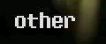

|
Jump to: 4th Jul 4th July 2023 @ 16:44uuuh, apparently it's July already???? that's wild. Anyways, hope you lot are doing well and all that stuff!! for me, the past few months have been *a lot* with finishing second year of university (which was a bit stressful, ngl) along with other life stuff. so, I'm going to do a little update post for this website, along with talking about some other things I've done recently which I thought you might be interested in. I tried writing this post last month as a standalone blog post, but I struggled to figure out how to write it (if you get what I mean, lmao). Website Updates![Screenshot of a Windows 2000 virtual machine with the IconArt software open. The window displays an earlier version of the 32 by 32 favicon for this website, enlarged with a pixel grid, with some options for editing tools on the left and colour pallette on the right. The favicon features a background of a Tetris light and some warm fairy lights to the side, with a blue LED illuminating the scene. Some text in a yellow pixel-style font appears in front which reads "OR456". Above the editor is where other sizes for the icon are displayed. Here, there's that 32 by 32 version along with a smaller 16 by 16 one as well, displayed in the original size. The smaller 16 by 16 version is similar to the other one, but only displays the text "456"](../../gallery/images/thumb/VirtualBox_Windows2000_11_02_2023_15_43_10.jpg)
earlier this year in February, I made a favicon for this website!! I wanted to have one some time earlier, but I struggled trying to figure out a design for it (particularly something that works at a 16x16 or 32x32 resolution). the one I made isn't perfect, but I think it works well enough. I ended up making two designs for those resolutions in GIMP and then used a (somewhat) obscure freeware program called "IconArt" on Windows 2000 to make a .ico file from them. Honestly, I could have done that just fine in GIMP as well (which I found out afterwards), but it was still fun trying out some older software for that regardless. as for other website related stuff, I finally started working on the Gallery section of the site this month. so far, I've added the images featured in this post in the gallery section; I just need to figure out how I want the main page for it to be organised. Along with that, I've continued doing research on different web hosting solutions to host this site with (as I've mentioned a few times here). If any of you reading this have any good suggestions or tips for this, feel free to let me know :3 ![Filming setup I used for the bonus segment in the LC III video, showing an iMac G4 at the corner of a desk. A Sony a5100 camera is placed near the edge of the desk with a Joby Gorillapod Tripod, filming the keyboard and mouse connected to the iMac. Above the desk slightly is a Deity V-Mic D3 microphone on a stand, which is facing down towards the iMac for recording audio for the video. That microphone is connected with a long cable to the Zoom H1 audio recorder, placed next to the camera in this photo. To the left of the iMac is a Lenovo laptop running Linux, which was recording VGA capture footage from the iMac G4 using an Avermedia HDMI capture card and an Atlona scaler (not pictured). The laptop is displaying OBS with the live preview from the capture card, along with an mpv window playing back the capture I recorded previously](../../gallery/images/thumb/GOPR1699.JPG)
![Filming setup I used for the main segment in the LC III video, focusing on that computer placed at the far left corner of a desk. There's also an Apple Extended Keyboard II and Desktop Bus Mouse II connected to the LC III. To the right of the photo is where the main camera equipment was, with a GoPro Hero 10 Black and Deity V-Mic D3 microphone both on small tripods, along with a Zoom H1 audio recorder that the Deity mic was connected to. A BenQ 22 inch 1080p monitor is shown to the right of the LC III and was displaying a colour bar output from the video scaler I used with the LC III (not pictured). Finally in the background, there's a sofa with my 2017 MacBook Pro I used for recording the VGA capture footage, along with a Sony a5100 camera on a standard tripod](../../gallery/images/thumb/PXL_20230327_004047178.jpg)
if you haven't already seen, I did put out a video on this website about the LC III I got (to go with the blog post I wrote on it). even though I made the Very Wise decision [/s] of doing this whilst trying to balance uni and other things, I did enjoy making this for sure! as I worked on this, I had also learnt how to use FFmpeg for video encoding and experiment with encoding videos for playback on older hardware and software. if I did have an easier method of transferring files to the LC III, I would have probably demonstrated this in the video, as it would have been complicated to do with just floppy disks. once I do eventually get a BlueSCSI, it will probably be one the first things I try with it! and maybe I'll make a follow up to the video? idk really. regardless, I did make a MPEG-1 encode of the intro which I'll add here, and do the other segments at another time once I've got self-hosting figured out for this site. if you're interested in encoding videos for older computers yourself, I would recommend checking out this guide over on Razorback, which I used myself for this! ![Screenshot of Final Cut Pro 7.0.4 running under OS X Mavericks on a Early 2011 13 inch MacBook Pro. The screenshot shows the editing software open with a project, with the timeline consisting of a VGA capture recording from the LC III, with a second video track above that including camera footage showing the keyboard and mouse as I'm using the computer, positioned and cropped to a small portion of the corner in the video. The file names used for the camera footage indicate that it is a ProRes 422 transcode, to help editing with this version of Final Cut.](../../gallery/images/thumb/LCIIIvid_fcp7_1.jpg)
as for making for the video itself, the process was quite a bit different compared to previous stuff I've done. since I originally wanted to try editing this one of my older Macs, I recorded all of the VGA capture footage in ProRes using QuickTime for more efficient editing (apart from the section with the iMac G4, which I just recorded with OBS on Linux). the problem I had here is that, as mentioned earlier, with me trying to finish this in a certain time frame and balancing uni work, I wasn't able to properly spend time planning what I wanted to use to edit the video and how. what I ended up doing was using editing software I'm already experienced with, which was Final Cut Pro X on my 2017 MacBook Pro. regardless, I'm happy with how the video turned out and hopefully I can do some other project like this where I use old video editing software in the future. Tinkering with Mobile Linux![Galaxy S3 with various windows open in Xfce. A terminal window with htop is open, displaying the usage of the 4 CPU cores in the phone, along with memory usage (which in this case was displaying 219 MB used out of the 1 GB available). In front of the terminal window, the Thunar file manager is open, along with the Xfce about screen displaying some system information. This lists the following:
Device: samsung-m0
OS Name: postmarketOS v22.12.2
OS Type: 32-bit
Xfce Version: 4.16
Distributor: Alpine Linux
CPU: ARMv7 Processor rev 0 (v7l) x 4
Memory: 998.6 MiB
GPU: Mali400](../../gallery/images/thumb/galaxys3_xfce4.jpg)
another thing I've been doing recently is tinkering with postmarketOS, a mobile linux distro, on an old Galaxy S3 I got a few years ago from a family relative. it's the first time I've tried out mobile linux stuff as well as custom OSes on android phones in general, as I never really had the confidence to install one before. regardless, postmarketOS is awesome! as I've been using Linux more regularly over the last few years for day to day computing, the idea of having a proper linux distribution on a mobile device to some extent (without the locked down nature of iOS and Android) is one the coolest things ever. ![Screenshot of the hyfetch output from the terminal in postmarketOS version 23.06 running on the Galaxy S3 with GNOME Mobile. Some text from the initial setup of hyfetch alongside the output, which displays the following info:
OS: postmarketOS v23.06 armv7l
Host: Samsung Galaxy S3 (GT-I9300) based on Exynos4412
Kernel: 6.3.5-postmarketos-exynos4
Uptime: 13 minutes
Packages: 950 (apk)
Shell: ash
Resolution: 720x1280
DE: GNOME 44.0 (wayland)
Theme: Adwaita [GTK2/3]
Icons: Adwaita [GTK2/3]
Terminal: gnome-console
CPU: ARM Cortex-A9 (4) @ 1.40 GHz
Memory: 702.12 MiB / 997.55 MiB](../../gallery/images/thumb/Screenshot_from_2023-07-05_10-00-00_S.jpg)
whilst it may be slower than other newer supported devices (e.g. OnePlus 6), the OS runs pretty well on the Galaxy S3 with the majority of the available UIs you can use. when I first installed this back in March, I tried it out with the phosh mobile interface and then later tested sxmo-de-sway. more recently, I've had xfce4 installed and (the currently work in progress) gnome-mobile, which is what I have on it currently. the only one I did have a slight issue with on the S3 in particular (when I tried it) was plasma-mobile, which appeared to be more resource-intensive here; as it ran out of RAM at one point using it. Now Using Matrixone more thing to mention in this update, is that as of a couple months ago, I now use the chat messaging protocol Matrix. if any of you use this as well, feel free to message me on there if you want! I've linked to it on the contact page of this site :D with Discord being the problematic proprietary platform it is, I find Matrix to be a lot better in many ways. it's definitely not perfect (then again, is anything really?) but I do quite like it. one of the good things about Matrix is how there aren't any restrictions to using third party clients (like Cinny and nheko, which I've mainly been using), particularly worthy of note as I've heard the main first party client (Element) isn't a very good client in general. I would recommend checking out this blog post by h00, which talks a bit more about Matrix and some of the other common alternatives to Discord, if you want to learn more about this. but yeah, with the recent stuff of Twitter and Reddit "breaking down" due to shitty controversial decisions, I wouldn't be surprised if Discord does something similar at some point down the line. |
 |
||||||
 |
 |
 |
 |
 | ||